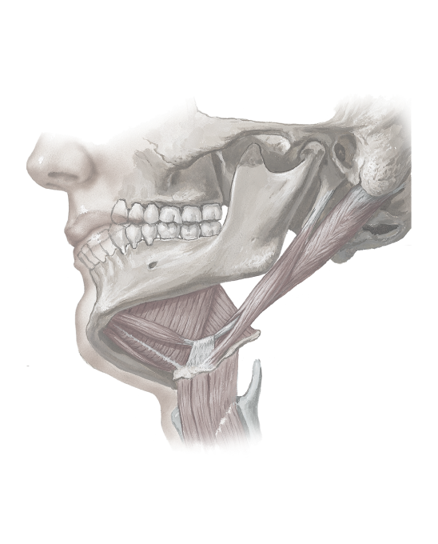

/*
*/
Digastric muscle (anterior and posterior bellies)
Digastric muscle (anterior and posterior bellies)
Mastoid process
External acoustic meatus
Styloid process of temporal bone
Coronoid process
Ramus of mandible
Mental foramen
Trochlea for intermediate tendon of digastric muscle
Sternohyoid muscle
Omohyoid muscle
Thyrohyoid muscle
Mylohyoid muscle
Hyoglossus muscle
Stylohyoid muscle
1
1
2
3
4
5
6
7
8
9
10
11
12
13
14